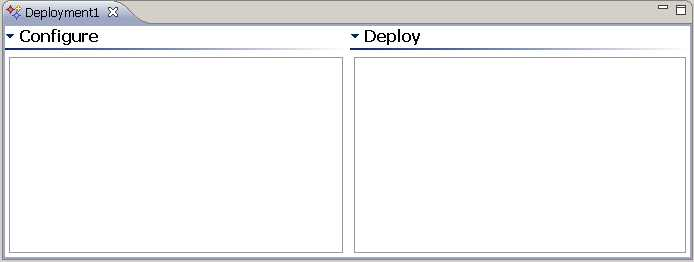
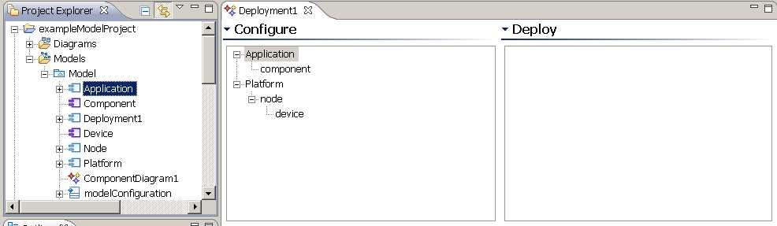
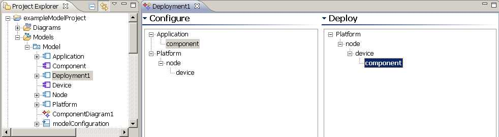

Deployment Editor
To create a deployment, do the following:
- In the Project Explorer, right-click your model and from the pop-up menu, select
Add Zeligsoft > Deployment.
The deployment is added to the Project Explorer with the following format: Deploymentnumber. Edit the default name to suit your model.
To open and view a deployment, in the Deployment Editor, do the following:
- In the Project Explorer, right-click a deployment and from the pop-up menu, select
Open with Deployment Editor.
-OR-- In the Project Explorer, double-click a deployment.
The Deployment Editor has two panes: Configure and Deploy.

The Configure pane is used to create deployment parts for a deployment. Deployable source and target elements need to be configured
using the Configure pane.

Right-click an element to display the following options:
- Expand All: this expands the element to show member elements.
- Show In Project Explorer: this highlights the element in the Project Explorer.
- Delete: this deletes the element from the Deployment Tree Editor.
To create deployment parts, do the following:
- In the Project Explorer select a valid model element and drag it onto the Configure pane.
The element is added to the Configure pane and displayed in the tree and a deployment part is created on the deployment.
If you try to drag an invalid element onto the Configure pane, it will be disallowed.
The Deploy pane is used to define allocations (deployed elements).

To deploy an element, do the following:
- In the Configure pane, select the deployment target element.
- Drag and drop the selected element onto the Deploy pane.
- In the Configure pane, select the deployable source element.
- Drag and drop the selected element onto the target element item in the Deploy pane.
An allocation is added to the deployment model element and it is displayed in the Deploy pane. Allocations are
displayed in bold.
The Deployment Editor disallows invalid deployments. If you drag an element and hover over an unexpanded element, the tree node
will automatically expand.
Right-click an element to display the following options:
- Expand All: this expands the element to show member elements.
- Show In Project Explorer: this highlights the element in the Project Explorer.
- Undeploy: Undeploys the element.
The deployment model element is contained within a model or package. If that model or package has been edited and is
therefore marked as dirty, the Deployment Editor is also marked as dirty. A save in the Deployment Editor is the
equivalent to a save of the container model or package.
If any of the model elements relevant to the deployment are edited, the deployment is updated to reflect the changes.
Filtering Deployment Parts
If the Deployment Elements filter is toggled on, the deployment parts of a deployment do not show in the Project Explorer.
To control the display of deployment parts do the following:
- In the Project Explorer, select the Deployment.
- On the tab in the Project Explorer, select the View Menu arrow.
- Select Customize View.
- Enable or disable Deployment Elements on the Filters tab.